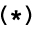

TIB #TIB @ TYPE ok
TIB #TIB @ TYPE ok
In this chapter, we'll explain how Forth handles I/O of character strings to and from disk and the terminal.
Specifically, we'll discuss disk-access commands, output commands, string-manipulation commands, input commands, and number-input conversion.
The word EMIT takes a single ASCII representation on the stack, using the low-order byte only, and prints the character at your terminal. For example, in decimal:
65 EMIT A ok 66 EMIT B ok
The word TYPE prints an entire string of characters at your terminal, given the starting address of the string in memory and the count, in this form:
( addr u -- )
We've already seen TYPE in our number-formatting definitions without worrying about the address and count, because they are automatically supplied by #>.
Let's give TYPE an address that we know contains a character string. Remember that the starting address of the terminal input buffer is returned by TIB? Suppose we enter the following command:
TIB #TIB @ TYPE
This will type 15 characters from the terminal input buffer, which contains the command we just entered:
TIB #TIB @ TYPE
Let's digress for a moment to look at the operation of .". At compile time, when the compiler encounters a dot-quote, it compiles the ensuing string right into the dictionary, letter-by-letter, up to the delimiting double-quote. To keep track of things, it also compiles the count of characters into the dictionary entry. Given the definition
: TEST ." sample " ;and looking at bytes in the dictionary horizontally rather than vertically, here is what the compiler has compiled:
If we wanted to, we could type the word "SAMPLE" ourselves (without executing TEST) with the phrase
' TEST >BODY CELL+ 1+ 7 TYPEwhere
' TEST >BODYgives us the body address of TEST,
CELL+ 1+offsets us past the address and the count, to the beginning of the string (the letter "s"), and
7 TYPEtypes the string "sample."
That little exercise may not seem too useful. But let's go a step further.
Remember how we defined LABEL in our egg-sizing application, using nested IF...THEN statements? We can rework our definition using TYPE. First let's make all the labels the same length and "string them together" within a single definition as a string array. (We can abbreviate the longest label to "XTRA LRG" so that we can make each label eight characters long, including trailing spaces.)
: "LABEL" ." REJECT SMALL MEDIUM LARGE XTRA LRGERROR " ;
Once we enter
' "LABEL" >BODY CELL+ 1+to get the address of the start of the string, we can type any particular label by offsetting into the array. For example, if we want label 2, we simply add sixteen (2 x 8) to the starting address and type the eight characters of the name:
16 + 8 TYPE
Now let's redefine LABEL so that it takes a category-number from zero through five and uses it to index into the string array, like this:
: LABEL 8 * ['] "LABEL" >BODY CELL+ 1+ + 8 TYPE SPACE ;
Recall that the word ['] is just like ' except that it may only be used inside a definition to compile the address of the next word in the definition (in this case, "LABEL"). Later, when we execute LABEL, bracket-tick-bracket followed by to-body will push the body address of "LABEL" onto the stack. The number corresponding to CELL+ 1+ is added, then the string offset is added to compute the address of the particular label name that we want.
This kind of string array is sometimes called a "superstring." As a naming convention, the name of the superstring usually has quotes around it. Note that this method is in practice never used, as the same result can be had with the completely portable ANS Forth word C", as follows:
: "LABEL" C" REJECT SMALL MEDIUM LARGE XTRA LRGERROR " ; : LABEL 8 * "LABEL" 1+ + 8 TYPE SPACE ;
Our new version of LABEL will run a little faster because it does not have to perform a series of comparison tests before it hits upon the number that matches the argument. Instead it uses the argument to compute the address of the appropriate string to be typed.
Notice, though, that if the argument to LABEL exceeds the range zero through five, you'll get garbage. If LABEL is only going to be used within EGGSIZE in the application, there's no problem. But if an "end user," meaning a person, is going to use it, you'd better "clip" the index, like this:
: LABEL 0 MAX 5 MIN LABEL ;
| TYPE | ( addr u -- ) | Transmits u characters, beginning at address, to the current output device. |
We mentioned before that the word BLOCK copies a given block into an
available buffer and leaves the address of the buffer on the stack. Using this address as a starting-point,
we can index into one of the buffer's 1,024 bytes and type any string we care to. For example, to print
line 0 of block 1, we could say (assuming you've executed USE blocks.fb)
CR 1 BLOCK 64 TYPE
To print line eight, we could add 512 (8 x 64) to the address, like this:
CR 1 BLOCK 512 + 64 TYPE
Before we give a more interesting example, it's time to introduce a word that is closely associated with TYPE.
| -TRAILING | ( addr u1 -- addr u2 ) | Eliminates trailing blanks from the string that starts at the address by reducing the count from u1 (original byte count) to u2 (shortened byte count). | 
|
This simple random number generator can be useful for games, although for more sophisticated
applications such as simulations, better versions are available.
( Random number generation -- High level ) VARIABLE rnd HERE rnd ! : RANDOM rnd @ 31421 * 6927 + DUP rnd ! ; : CHOOSE ( u1 -- u2 ) RANDOM UM* NIP ; ( where CHOOSE returns a random integer within the range 0 = or < u2 < u1. ) Here's how to use it: To choose a random number between zero and ten (but exclusive of ten) simply enter 10 CHOOSEand CHOOSE will leave the random number on the stack. |
-TRAILING can be used immediately before the TYPE command so that trailing blanks will not be printed. For instance, inserting it into our first example above would give us
CR 1 BLOCK 64 -TRAILING TYPE
The following example uses TYPE
USE blocks.fb : POOF 16 CHOOSE 64 * 2 BLOCK + CR 64 -TRAILING TYPE ;
try it:
POOF qualified ok POOF flexible ok POOF total ok
The commands for moving character strings or data arrays are very simple. Each requires three arguments: a source address, a destination address, and a count.
| CMOVE | ( addr1 addr2 u -- ) | Copies a region of memory u bytes long, byte-by-byte beginning at addr1, to memory beginning at addr2. The move begins with the contents of addr1 and proceeds toward high memory. |
|
| CMOVE> | ( addr1 addr2 u -- ) | If u is greater than zero, copy u consecutive characters from the data space starting at c-addr1 to that starting at c-addr2, proceeding character-by-character from higher addresses to lower addresses. |
|
| MOVE | ( addr1 addr2 u -- ) | After this move, the u bytes at addr2 contain exactly what the u bytes at addr1 contained before the move (no "clobbering" occurs). |
|
Notice that these commands follow certain conventions we've seen before:
And so with these three words the arguments are
( source destination count -- )
To move the entire contents of a buffer into the PAD, for example, we would write
210 BLOCK PAD 1024 CMOVEalthough on cell-address machines the move might be made faster if it were cell-by-cell, like this:
210 BLOCK PAD 1024 MOVE
The word CMOVE> lets you move a string to a region that is higher in memory but that overlaps the source region.
If you were to use CMOVE, the first letter of the string would get copied to the second byte, but that would "clobber" the second letter of the string. The final result would be a string composed of a single character.
Using CMOVE> in this situation keeps the string from clobbering itself during the move.
You probably notice that CMOVE can be used to fill an array with a certain byte. On older systems the word FILL, which we introduced earlier, may have been defined using this trick. On modern Forths it is recommended to explicitly use FILL, if fill is what you want to do. For example, to store blanks into 1024 bytes of the pad, we say
PAD 1024 CHAR BL FILL
The word KEY awaits the entry of a single key from your terminal keyboard and leaves the character's ASCII equivalent on the stack in the low-order byte.
To execute it directly, you must follow it with a return, like this:
KEY
The cursor will advance a space, but the terminal will not print the "ok"; it is waiting for your input. Press the letter "A," for example, and the screen will "echo" the letter "A," followed by the "ok." The ASCII value is now on the stack, so enter .:
KEY A ok .
This saves you from having to look in the table to determine a character's ASCII code.
You can also include KEY inside a definition. Execution of the definition will stop, when KEY is encountered, until an input character is received. For example, the following definition will list a given number of blocks in series, starting with the current block, and wait for you to press any key before it lists the next one:
: BLOCKS ( count -- ) SCR @ + SCR @ DO I LIST KEY DROP LOOP ;
In this case we drop the value left by KEY because we don't care what it is.
Or we might add a feature that allows us either to leave the loop at any time by pressing return or to continue by pressing any other key, such as as space. In this case we will perform a conditional test on the value returned by KEY.
13 CONSTANT #EOL : BLOCKS ( count -- ) SCR @ + SCR @ DO I LIST KEY #EOL = ( cr) IF LEAVE THEN LOOP ;
Note that in some Forth systems, the carriage-return key is received as a linefeed (10) or as a null (zero).
| KEY | ( -- c ) | Returns the ASCII value of the next available character from the current input device. |
|
There are several words involved with string input. We'll start with the lower-level of these and proceed to some higher-level words. Here are the words we will cover in this section:
| ACCEPT | ( c-addr u1 -- u2 ) | Accepts at most u1 characters from the terminal keyboard and stores them, starting at the address, returning the count of accepted characters. As this word waits for a carriage return, more than u1 characters can be received. |
|
| WORD | ( c -- addr ) | Reads one word from the input stream, using the character (usually blank) as a delimiter. Moves the string to the address (HERE) with the count in the first byte, leaving the address on the stack. |
|
The word ACCEPT stops execution of the task and waits for a specified maximum number of keystrokes from your keyboard. End of input is signaled by a carriage return. The incoming text is stored beginning at the address given as an argument and the count of accepted characters is returned on the stack. Note that the actually received number of keystrokes can be higher than the specified maximum length of the returned string, e.g. when a user needs to edit the input.
For example, the phrase
TIB 80 ACCEPTrequests up to eighty characters and store them in the Terminal Input Buffer (TIB). (Storing directly in the TIB is not standard, but e.g. iForth has no problem with this tradition.)
This phrase is the one used in the definition of QUIT to get the input for INTERPRET.
Let's move on to the next higher-level string-input operator. We've just explained that QUIT contains the phrase
... TIB 80 ACCEPT #TIB ! INTERPRET ...but how does the text interpreter scan the terminal input buffer and pick out each individual word there? With the phrase
BL WORD
WORD scans the input stream looking for the given delimiter, in this case space, and moves the sub-string into a different buffer of its own, with the count in the first byte of the buffer. Finally, it leaves the address of the buffer on the stack, so that INTERPRET (or anyone else) knows where to find it. WORD's buffer usually begins at HERE, so the address given is HERE.
WORD looks for the given delimiter in the terminal input buffer, and moves the sub-string to WORD's buffer with the count in the first byte.
When you are executing words directly from a terminal, WORD will scan the input buffer, starting at TIB. As it goes along, it advances the input buffer pointer, called >IN, so that each time you execute WORD, you scan the next word in the input stream. WORD knows to stop scanning when >IN @ becomes larger than #TIB @, the count of received characters.
>IN is a "relative pointer"; that is, it does not contain the actual address but rather an offset that is to be added to the actual address, which is is in this case TIB. For example, after WORD has scanned the string "STAR," the value of >IN is five.
WORD ignores initial occurences of the delimiter (until any other character is encountered). You could type
STAR(that is, STAR preceded by several spaces) and get exactly the same string in WORD's buffer as shown above.
We'll get back to WORD later on in this chapter. For now, though, let's define a word that uses WORD and that is more useful for handling string input:
: TEXT ( delimiter -- ) PAD 258 BL FILL WORD COUNT PAD SWAP MOVE ;
TEXT, like WORD, takes a delimiter and scans the input stream until it finds the string delimited by it. It then moves the string to the pad. What is especially nice about TEXT is that before it moves the string, it blanks the pad. This makes it very convenient for use with TYPE. Here's a simple example:
CREATE my-name 40 ALLOT : I'M BL TEXT PAD my-name 40 MOVE ;
In the first line we define an array called my-name. In the second line we define a word called I'M which will allow us to enter
I'M EDWARD ok
The definition of I'M breaks down as follows: the phrase
BL TEXTscans the remainder of the input stream looking for a space or the end of the line, whichever comes first. (The delimiter that we give to TEXT is actually used by WORD, which is included in the definition of TEXT.) TEXT then moves the phrase to a nice clean "pad."
The phrase
PAD my-name 40 MOVEmoves forty bytes from the pad into the array called my-name, where it will safely stay for as long as we need it.
We could now define GREET as follows:
: GREET ." Hello, " my-name 40 -TRAILING TYPE ." , I speak Forth. " ;so that by executing GREET, we get
GREET Hello, EDWARD, I speak Forth. ok
Unfortunately, our definition of I'M is looking for a space as its delimiter. This means that a person named Mary Kay will not get her full name into my-name.
To get the complete input stream, we don't want to "see" any delimiter at all, except the end of line. Instead of "BL TEXT," we should use the phrase
1 TEXT
ASCII 1 is a control character that can't be ever sent from the keyboard and therefore won't ever appear in the input buffer. Thus "1 TEXT" is a convention used to read the entire input buffer, up to the carriage return. By redefining I'M in this way, Mary Kay can get her name into my-name, space and all.
By using other delimiters, such as commas, we can "accept" a series of strings and store each of them into a different array for different purposes. Consider this example, in which the word VITALS uses commas as delimiters to separate three input fields:
( Form love letter ) CREATE name 14 ALLOT CREATE eyes 12 ALLOT CREATE me 14 ALLOT : VITALS [CHAR] , TEXT PAD name 14 MOVE [CHAR] , TEXT PAD eyes 12 MOVE 1 TEXT PAD me 14 MOVE ; : LETTER PAGE ." Dear " name 14 -TRAILING TYPE ." ," CR ." I go to heaven whenever I see your deep " eyes 12 -TRAILING TYPE ." eyes. Can " CR ." you go to the movies Friday? " CR 30 SPACES ." Love, " CR 30 SPACES me 14 -TRAILING TYPE CR ." P.S. Wear something " eyes 12 -TRAILING TYPE ." to show off those eyes! " ;
Which allows you to enter
VITALS Alice,blue,Fred okthen enter
LETTER
It works every time.
So far all of our input has been "Forth style"; that is, numbers precede commands (so that a command will find its number on the stack) and strings follow commands (so that a command will find its string in the input stream). This style makes use of one of Forth's unique features: it awaits your commands; it does not prompt you.
But if you want to, you may put ACCEPT inside a definition so that it will request input from you under control of the definition. For example, we could combine the two words I'M and GREET into a single word which "prompts" users to enter their names. For example,
GREET What's your name?at which point execution stops so the user can enter a name:
GREET What's your name? Travis Mc Gee Hello, Travis Mc Gee, I speak Forth. ok
We could do this as follows:
: GREET CR ." What's your name?" TIB 40 ACCEPT #TIB ! 0 >IN ! 1 TEXT CR ." Hello, " PAD 40 -TRAILING TYPE ." , I speak Forth. " ;
We've explained all the phrases in the above definition except this one:
#TIB ! 0 >IN !
Remember that TEXT, because it uses WORD, always uses >IN as its reference point. But when the user enters the word GREET to execute this definition, the string GREET will be stored in the terminal input buffer and >IN will be pointing beyond "GREET". ACCEPT does not use >IN as its reference, so it will store the user's name beginning at TIB, on top of GREET. If you were to execute TEXT now, it would miss the first five letters of the user's name. It's necessary to reset >IN to zero so that TEXT will look where ACCEPT has put the name.
When you type a number at your terminal, Forth automatically converts this character string into a binary value and pushes it onto the stack. Forth also provides a command which let you convert a character string that begins at any memory location into a binary value.
| >NUMBER | ( ud1 c-addr1 u1 -- ud2 c-addr2 u2 ) | ud2 is the unsigned result of converting the characters within the string specified by c-addr1 u1 into digits, using the number in BASE, and adding each into ud1 after multiplying ud1 by the number in BASE. Conversion continues left-to-right until a character that is not convertible, including any "+" or "-", is encountered or the string is entirely converted. c-addr2 is the location of the first unconverted character or the first character past the end of the string if the string was entirely converted. u2 is the number of unconverted characters in the string. |
|
Here's an example that uses >NUMBER:
: PLUS 0. BL WORD COUNT >NUMBER 2DROP DROP + ." = " . ;
PLUS allows us to prove to any skeptic that Forth could use infix notation if it wanted to. We can enter
2 PLUS 13
When PLUS is executed, the "2" will be put on the stack in binary form, while the "3" will still be in the input stream as a string. The phrase
0. BL WORDreads the string and provides the accumulator for >NUMBER; >NUMBER converts it to binary and puts the double-length result plus an unconverted string on the stack. We drop the string and the top half of the double-length result. Now + adds the two single-length values and . prints the result.
Note that you can use >NUMBER to create your own specialized number input conversion routines. Since >NUMBER returns the address of the first unconvertible character, you can make decisions based on whether the character is a hyphen, dot, or whatever. You can also make decisions based on the location of the non-convertible character within the number. For instance, you can write a routine that lets you enter a number with a decimal point in it and then scales it accordingly.
To give a good example of the use of >NUMBER, Figure 10-1 shows a definition of NUMBER. This version reads any of the characters
: , - . /as valid punctuation marks which cause the value to be returned on the stack as a double-length integer. If none of these characters appear in the string, the value is returned as single-length. This definition uses the word WITHIN as we defined it in the problems for Chap. 4.
Here we use the variable PUNCT to contain a flag that indicates whether punctuation was encountered. We suggest that you use an available user variable instead.
VARIABLE punct | Creates a flag that will contain true if the number contains valid punctuation. |
: NUMBER ( addr u -- n or d ) | |
0 punct ! | Initialize flag, no punctuation has occured. |
OVER C@ | Get the first digit. |
[CHAR] - = | Is it a minus sign? |
DUP >R | Save the flag on the return stack. |
IF 1 /STRING THEN | If the first character is "-", adds 1 to the address and decrements the character count. This effectively skips the "-" character, pointing to the real first digit. |
0. 2SWAP | provides the double-length zero as an accumulator. |
BEGIN | |
>NUMBER | Begins conversion; converts until an invalid digit. |
DUP | While there are still characters left, fetch the invalid digit. |
WHILE | |
OVER C@ DUP [CHAR] : = | a colon, or |
SWAP [CHAR] , [CHAR] / 1+ WITHIN OR | a comma, hyphen, period or slash. |
DUP punct ! | Set punct to indicate whether valid punctuation has occurred. |
0= ABORT" ? " | Otherwise issue an error message. |
1 /STRING | Skip the punctuation character. |
REPEAT | Exits here if a blank is detected; otherwise repeats conversion. |
2DROP | Drop the string from the stack. |
R> IF DNEGATE THEN | If the flag on the return stack is true, negates d. |
punct @ 0= IF DROP THEN ; | If there was no punctuation, returns a single-length value by dropping the high-order cell. |
So far we have only talked about using WORD to scan the terminal input buffer (which holds the characters that are accepted from the terminal). But if we recall that the phrase
BL WORDis used by the text interpreter, we realize that WORD actually scans the input stream, which is either the terminal input buffer, a string being EVALUATEd, or disk memory being LOADed or INCLUDED.
To achieve this flexibility, WORD uses other pointers in addition to >IN. The other pointers make sure WORD looks in memory (when doing EVALUATE), on disk (when doing LOAD or INCLUDED) or in the terminal input buffer.
A useful word to use in conjunction with WORD is COUNT.
Recall that WORD leaves the length of the word in the first byte of
WORD's buffer and also leaves the address of this byte on the stack.
The word COUNT puts the count on the stack and increments the address,
like this:
leaving the stack with a string address and a count as appropriate arguments for TYPE, MOVE, etc.
COUNT is used in the definition of TEXT which we gave a few sections back.
| COUNT | ( addr -- addr+1 u ) | Converts a character string, whose length is contained in its first byte, into the form appropriate for TYPE, by leaving the address of the first character and the length on the stack. |
|
We will further illustrate the use of WORD in one of the examples in Chap. 12.
Here is a Forth word that you can use to compare character strings:
| COMPARE | ( c-addr1 u1 c-addr2 u2 -- n ) | Compare the string specified by c-addr1 and u1 to the string specified by c-addr2 and u2. The strings are compared, beginning at the given addresses, character by character up to the length of the shorter string, or until a difference is found. If both strings are the same up to the length of the shorter string, then the longer string is greater than the shorter string. n is -1 if the string specified by c-addr1 and u1 is less than the string specified by c-addr2 and u2. n is zero if the strings are equal. n is 1 if the string specified by c-addr1 and u1 is greater than the string specified by c-addr2 and u2. |
|
COMPARE can be used to test whether two character strings are equal or whether one is alphabetically greater or lesser than the other.
Here's a list of the Forth words we've covered in this chapter:
| TYPE | ( addr u -- ) | Transmits u characters, beginning at address, to the current output device. |
|
| -TRAILING | ( addr u1 -- addr u2 ) | Eliminates trailing blanks from the string that starts at the address by reducing the count from u1 (original byte count) to u2 (shortened byte count). |
|
| MOVE | ( addr1 addr2 u -- ) | After this move, the u bytes at addr2 contain exactly what the u bytes at addr1 contained before the move (no "clobbering" occurs). |
|
| CMOVE | ( addr1 addr2 u -- ) | Copies a region of memory u bytes long, byte-by-byte beginning at addr1, to memory beginning at addr2. The move begins with the contents of addr1 and proceeds toward high memory. |
|
| KEY | ( -- c ) | Returns the ASCII value of the next available character from the current input device. |
|
| ACCEPT | ( c-addr u1 -- u2 ) | Accepts at most u1 characters from the terminal keyboard and stores them, starting at the address, returning the count of accepted characters. As this word waits for a carriage return, more than u1 characters can be received. |
|
| WORD | ( c -- addr ) | Reads one word from the input stream, using the character (usually blank) as a delimiter. Moves the string to the address (HERE) with the count in the first byte, leaving the address on the stack. |
|
| >NUMBER | ( ud1 c-addr1 u1 -- ud2 c-addr2 u2 ) | ud2 is the unsigned result of converting the characters within the string specified by c-addr1 u1 into digits, using the number in BASE, and adding each into ud1 after multiplying ud1 by the number in BASE. Conversion continues left-to-right until a character that is not convertible, including any "+" or "-", is encountered or the string is entirely converted. c-addr2 is the location of the first unconverted character or the first character past the end of the string if the string was entirely converted. u2 is the number of unconverted characters in the string. |
|
| COUNT | ( addr -- addr+1 u ) | Converts a character string, whose length is contained in its first byte, into the form appropriate for TYPE, by leaving the address of the first character and the length on the stack. |
|
| CMOVE> | ( addr1 addr2 u -- ) | If u is greater than zero, copy u consecutive characters from the data space starting at c-addr1 to that starting at c-addr2, proceeding character-by-character from higher addresses to lower addresses. |
|
| COMPARE | ( c-addr1 u1 c-addr2 u2 -- n ) | Compare the string specified by c-addr1 and u1 to the string specified by c-addr2 and u2. The strings are compared, beginning at the given addresses, character by character up to the length of the shorter string, or until a difference is found. If both strings are the same up to the length of the shorter string, then the longer string is greater than the shorter string. n is -1 if the string specified by c-addr1 and u1 is less than the string specified by c-addr2 and u2. n is zero if the strings are equal. n is 1 if the string specified by c-addr1 and u1 is greater than the string specified by c-addr2 and u2. |
|
| BLANK | ( addr u -- ) | Store ASCII blanks into u bytes of memory, beginning at addr. |
|
| | |
|---|---|
| Relative pointer | A variable which specifies a location in relation to the beginning of an array or string--not the absolute address. |
| Superstring | in Forth, a character array which contains a number of strings. Any one string may be accessed by indexing into the array. |
| Virtual memory | the treatment of mass storage (such as the disk) as though it were resident memory; also the mechanism of the operating system which makes this treatment possible. |
| | |

CHAR A CHAR E CHANGEwill change all the "A"s into "E"s. [answer]
Here is the order of the cycle:
Rat Ox Tiger Rabbit Dragon Snake Horse Ram Monkey Cock Dog Boar
Write a word called .ANIMAL that types the name of the animal corresponding to its position in the cycle as listed here; e.g.,
0 .ANIMAL RAT ok
Now write a word called (JUNEESHEE) which takes as an argument a year of birth and prints the name of the associated animal. (1900 is the year of the Rat, 1901 is the Ox, etc.)
Finally, write a word called JUNEESHEE which prompts the user for his/her year of birth
and prints the name of the person's Juneeshee animal. Define it so that the user won't have to
press "return" after entering the year.
[answer]
1 LETTER
Now define LETTERS so that it prints one letter for each person in your file.
First select an unused block. Put this block number in a variable. Then define an access word which accepts a cell subscript from the stack, then computes the block number corresponding to this subscript, calls BLOCK and returns the memory address of the subscripted cell. This access word should also call UPDATE. Test your work sofar.
Next use the first cell as a count of how many data items are stored in the array. Define a word PUT which will store a value into the next available cell of the array. Define a display routine which will print the stored elements in the array.
Now use this virtual array facility to define a word ENTER which will accept pairs of numbers and store them in the array.
Finally, define TABLE to print the data entered above, eight members per line. [answer]